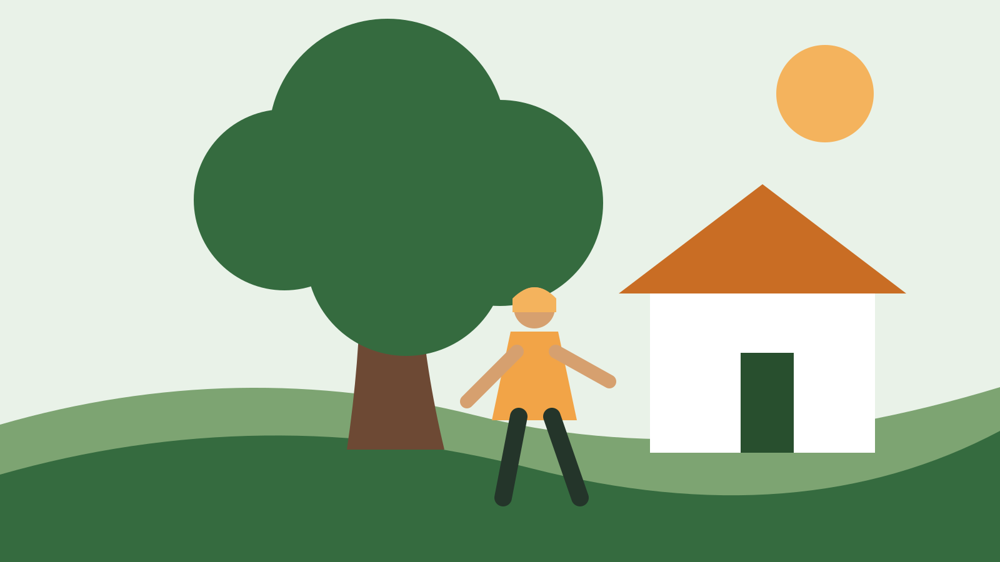

Before the estimate
Take a few property photos
Wide and close views can help explain access, nearby structures, and the tree or stump involved.
Open estimate formTree care built around the property
Apple Creek Tree Services helps property owners plan tree removal, trimming, stump work, and storm cleanup with clear information and an easy estimate request.

Planning first
Tree work changes from property to property. The estimate form gives customers room to describe the work before scheduling.
Planning resources
A few details about your property can help explain the work you need.
Planning information
Driveways, fences, sheds, utility lines, slopes, and tight access can affect how a job is approached.
Request an estimate